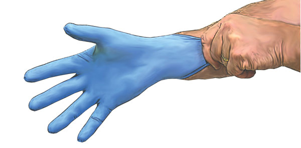

Dressing Technique
1. Before commencing cleaning/dressing of wound using aseptic technique, the trolley or bench should be disinfected.
2. Place disposable bag away from sterile field by taping to side of trolley/bench.
3. Collect items required for dressing – dressings/fluids etc.
4. Expose area requiring dressing.
5. Wash hands thoroughly.
6. Open outer pack. Discard.
7. Open inner pack and arrange items with top pair of forceps.
8. With same pair of forceps, remove soiled dressings. Discard dressings and forceps.
9. Pour solution and open appropriate dressings.
10. Wash hands and put on gloves.
11. Place sterile towel between wound and attendant, holding towel by edges.
12. Using forceps, pick up swab. Moisten lightly with solution.
13. Cleanse wound swabbing from the outside in – one stroke, one swab.
14. Dry wound and complete dressing. Secure with tape.
15. Wrap disposable items. Place in paper bag on side of trolley.
16. Dispose of equipment into contaminated waste receptacle.
17. Disinfect trolley/bench.
18. Wash hands thoroughly.